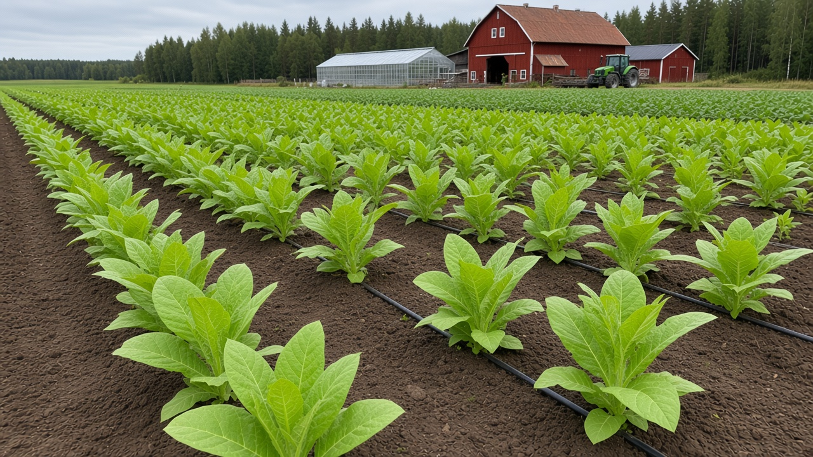
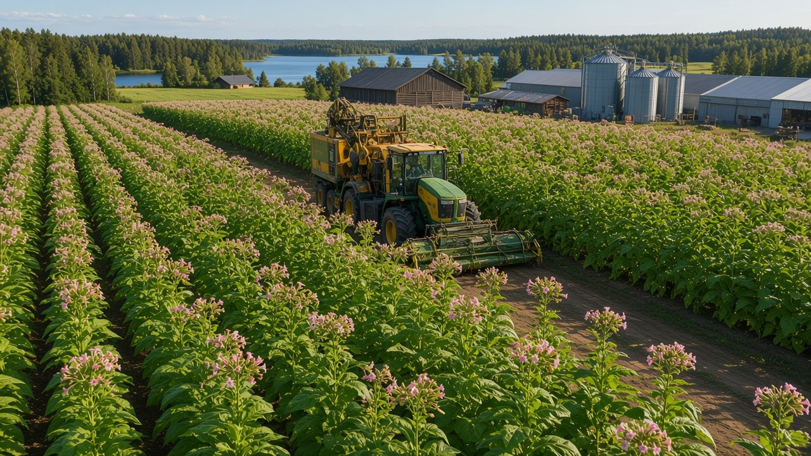
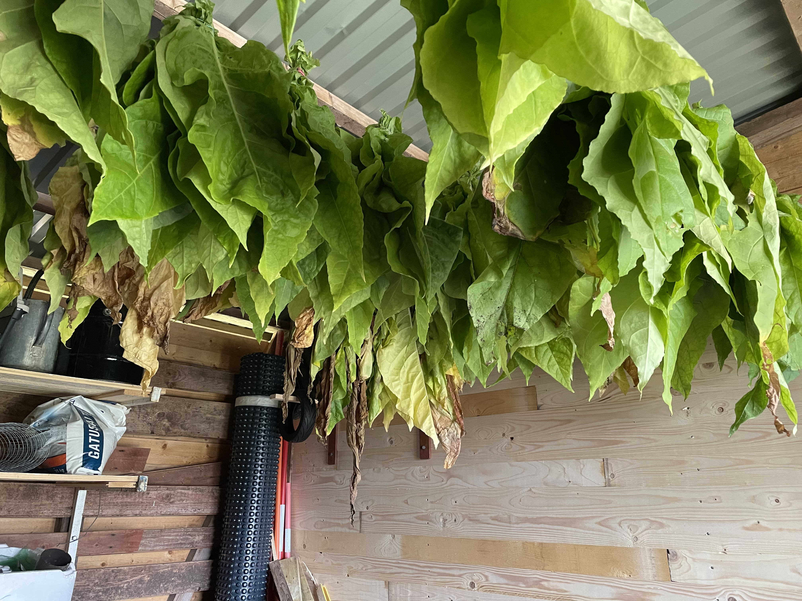
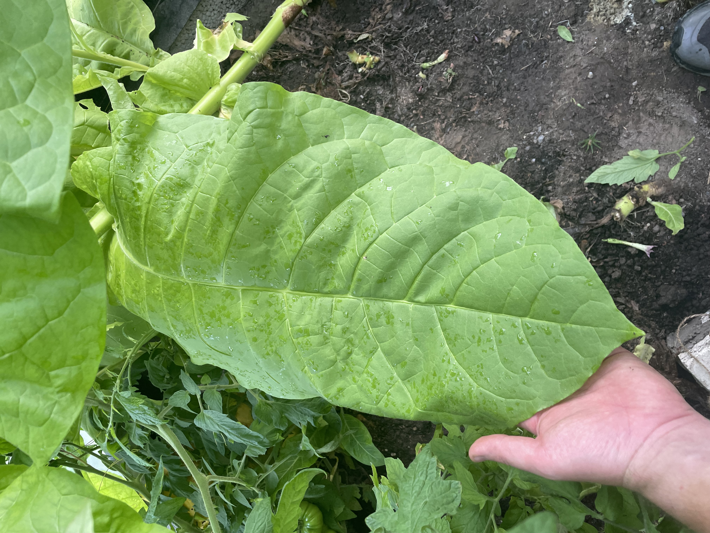

Hensbacka Gård
Beläget i det soldränkta Munkedal, strax 8 mil norr om göteborg. Mellan böljande kullar och varma björkskogar finner vi en gård som senaste åren börjat producera den uråldriga och upplyftande växt, tobak.




Från frö till dosa
Processen vi använder oss av är egentligen väldigt enkel. Frön drivs upp till ung-plantor i växthus tidigt på våran, nästan vintern, då vi börjar våran sådd.
Efter detta går det över till att vi sätter ut ung-plantorna i rader på våra fält, nånstans i början av maj, efter att frosten försvunnit. Sedan får dessa stå och gro till sig under sommarmånaderna, ända fram tills slutet på augusti då bladen börjar skifta färg och få en mer brunaktig kulör. Detta är tecknet på att skörd ska genomföras.
Sedan hängs dessa blad, som kan spänna upp till en armslängd, med rätt art, upp i våra torkrum där de får i torrt bra klimat torka tills dom har en yta som påminner om läder.
Efter att detta uppnåtts så maler vi ner all tobak, och smaksätter, bakar i ugn och paketerar sedan i dosor och det är dags för herr Brevbärare att hämta upp försändelserna och ge ut till det snus-sugna folket.